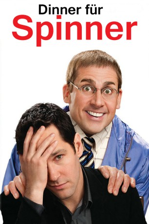

#2620 Dinner für Spinner
Alternativ: Dinner for Schmucks
 
 IMDB-Wertung: 5.9 / 10
IMDB-Wertung: 5.9 / 10  Metascore: 56
Metascore: 56 
Tims Chef veranstaltet ein allwöchentliches Dinner für Spinner. Seine Angestellten sind angewiesen, den größten Spinner, den sie finden können, als Gast mitzubringen. Wer den schrägsten Vogel einlädt und so für Entertainment sorgt, genießt die größte Wertschätzung des Chefs. Tim bringt eines Abends Barry mit - und der hat das Potenzial, alle anderen in Sachen Idiotie zu übertreffen. Damit läuft er allerdings Gefahr, seine Verlobte zu erzürnen, die von der Idee alles andere als begeistert ist. Ein Festmahl für Komödienfans ist dieses US-Remake des gleichnamigen französischen Hits aus dem Jahr 1998.
Jahr: 2010
Dauer: 114 Minuten
FSK: 12
Land: USA Studio: Paramount PicturesTonspuren: DD5.1 - ,
Untertitel: Deutsch,
Auflösung: 1080p (1920x1080) Größe: 9902 MB
Genre: Komödie
Regisseur: Jay Roach
Drehbuch: David Guion, Michael Handelman, Francis Veber
Soundtrack: Theodore Shapiro
Darsteller:
 Steve Carell als Barry
Steve Carell als Barry Paul Rudd als Tim
Paul Rudd als Tim Zach Galifianakis als Therman
Zach Galifianakis als Therman Jemaine Clement als Kieran
Jemaine Clement als Kieran Stephanie Szostak als Julie
Stephanie Szostak als Julie Lucy Punch als Darla
Lucy Punch als Darla Bruce Greenwood als Lance Fender
Bruce Greenwood als Lance Fender David Walliams als Müeller
David Walliams als Müeller Ron Livingston als Caldwell
Ron Livingston als Caldwell- Larry Wilmore als Williams
 Kristen Schaal als Susana
Kristen Schaal als Susana P.J. Byrne als Davenport
P.J. Byrne als Davenport Andrea Savage als Robin
Andrea Savage als Robin Nick Kroll als Josh
Nick Kroll als Josh Randall Park als Henderson
Randall Park als Henderson Lucy Davenport als Birgit
Lucy Davenport als Birgit Chris O'Dowd als Marco - Blind Swordsman
Chris O'Dowd als Marco - Blind Swordsman Jeff Dunham als Lewis the Ventriloquist
Jeff Dunham als Lewis the Ventriloquist Octavia Spencer als Madame Nora - Pet Psychic
Octavia Spencer als Madame Nora - Pet Psychic Patrick Fischler als Vincenzo - Vulture Lover
Patrick Fischler als Vincenzo - Vulture Lover Rick Overton als Chuck - Beard Champion
Rick Overton als Chuck - Beard Champion Eric Winzenried als Patrick
Eric Winzenried als Patrick- Nicole LaLiberte als Christina - Bird Girl
- Maria Zyrianova als Monique - Bird Girl
- Scott Weintraub als Maitre D'
 Alex Borstein als Red Hair Woman , uncredited
Alex Borstein als Red Hair Woman , uncredited- Gatsby Coram als Mansion Waiter , uncredited
- Natalie Goldwin als Accident Witness , uncredited
- Sandra Plazinic als Groupie , uncredited
- Blanca Soto als Catherine , uncredited
- Cole Coleman als Art Dealer In Art Gallery , uncredited
- Richard Hochman als Waiter , uncredited
- Douglas Huber als Doug Jacobsen , uncredited
- Aaron Michael McElligott als Waiter , uncredited
- Hunter James Mckeever als Boy Running From Vulture , uncredited
- Rachel Paquin als Mystery Woman , uncredited
- Luke Walker als Analyst , uncredited
Datei: X:\2010(A-F)\Dinner für Spinner (2010, FSK12, 1920x1080).mkv seit 26.11.2015
Festplatte: HD 2009(G-Z)-2010(A-F)
 Es gibt insgesamt 95 Filme in der Gruppe '2010(A-F)'
Es gibt insgesamt 95 Filme in der Gruppe '2010(A-F)'